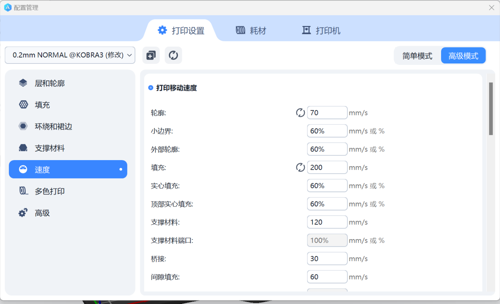
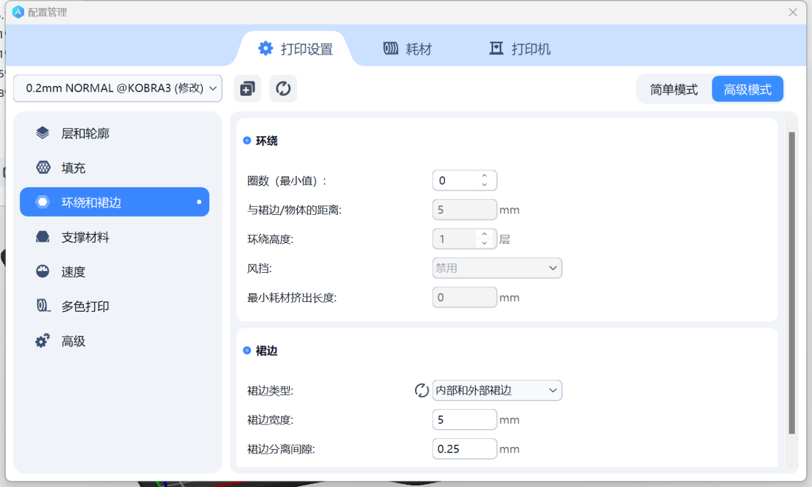
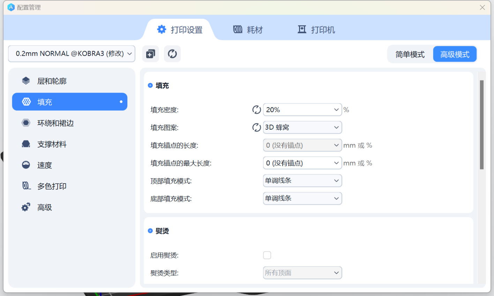
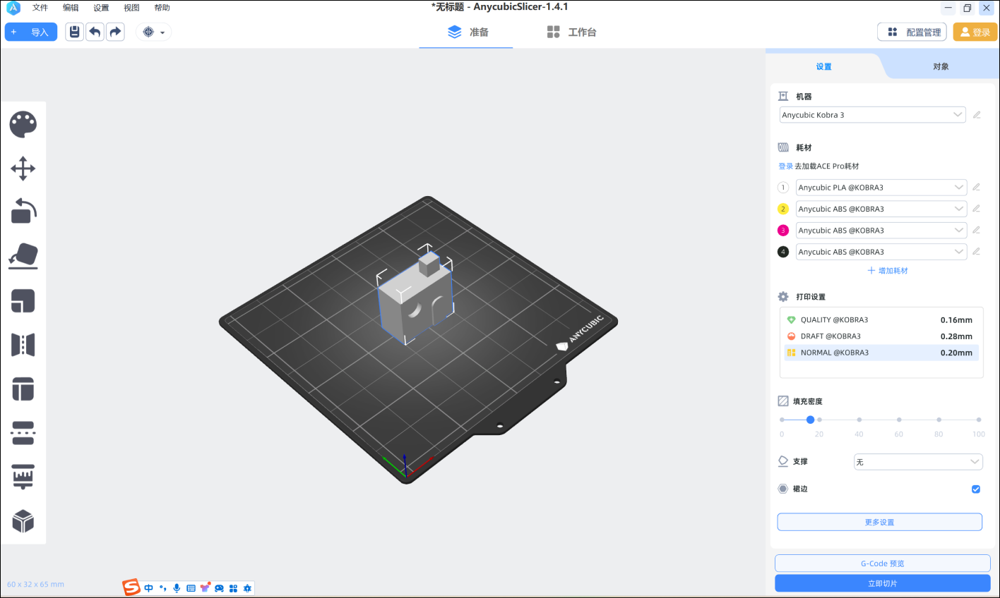
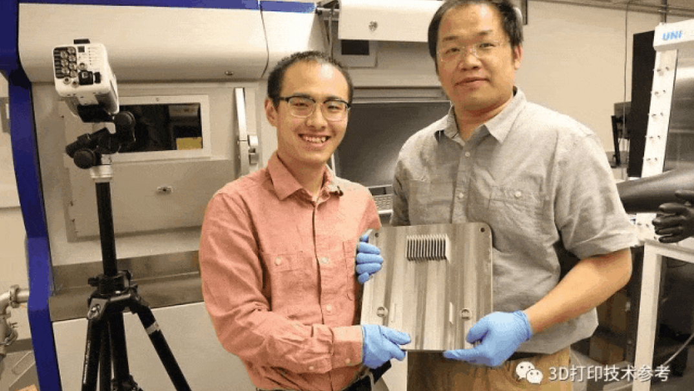
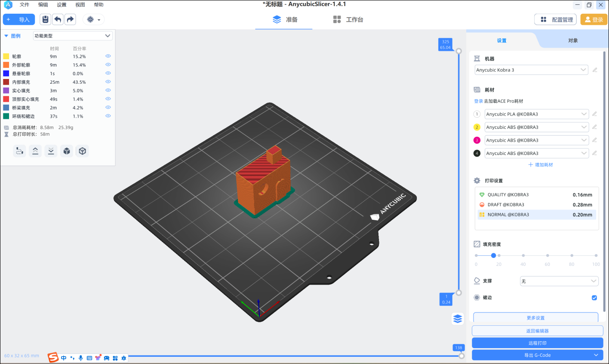
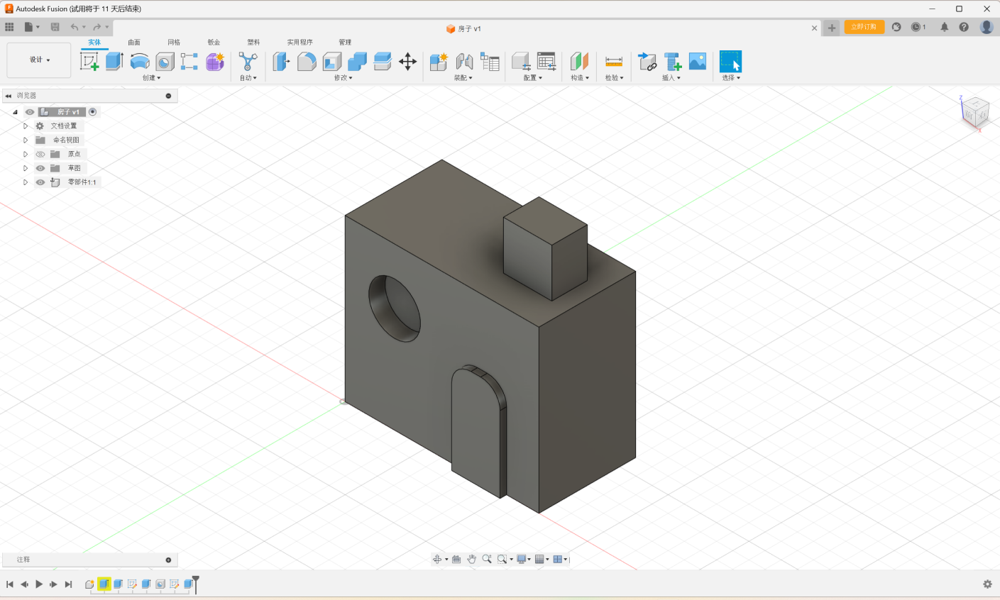

3D printer

2.Use slice software to setting parameter
3.Use 3D printer to manufacture it
1.3D printer new reseach or application



New application：
For the first time in China, efficient additive manufacturing of
super-sized copper alloy products has been achieved
On August 23, the Capital Aerospace Machinery Co., Ltd. released news
that it has made important progress in the metal 3D printing
manufacturing of rocket engines. The paper points out that Capital
Aerospace Machinery Co., Ltd. has successfully realized the additive
manufacturing of the inner wall test parts of the thrust chamber body of
a certain engine. The product has a diameter of 600 mm and a height of
850 mm, which is the largest overall additive manufacturing copper alloy
body product publicly reported at present, and its successful
development also marks that the company has become the first unit in
China to fully master the large-size chrome-zirconium copper alloy laser
selective melting additive manufacturing technology.
Thrust chamber, as the core component of rocket engine, is a typical
complex and precise component. In the past, the production of thrust
chamber body structure involved a complicated process, the manufacturing
cycle was at least 6 months, the reliability was insufficient, and the
production cost was high. In order to adapt to the new situation of
high-intensity density launch, gradually achieve "improving
quality, reducing cost and increasing efficiency", and enhance
competitive advantage, the research on additive manufacturing technology
of thrust chamber body has been put on the agenda. Laser selective
melting technology has high forming precision and is the "best
choice" for additive manufacturing of complex structure thrust
chamber body.
Process support breakthrough：
3D printing process non-destructive evaluation 90% detection rate
The first study on 3D printing technology published in Science in 2023
was published on January 5. A research team led by Tao Sun, associate
professor of Materials Science and Engineering at the University of
Virginia, has made the discovery that a method to detect keyhole
generation by integrating experimental data, multi-physics simulation,
and machine learning is able to capture the unique thermal features
associated with keyhole generation with sub-milliseconal time resolution
and a 100% prediction rate.
Researchers at Oak Ridge National Laboratory have developed a way to
combine post-inspection data from printed parts with information
collected by sensors during the printing process, and the combined data
teaches machine learning algorithms to identify defects in products.
This new method achieves a 90% detection rate, which is consistent with
the defect detection probability of traditional evaluation methods, thus
saving time and reducing costs.

New technology:
Unsupported metal 3D printing
1) EOS has introduced a new Smart Fusion solution for the Laser Powder
Bed Melting (LPBF)3D printing process, which visually detects potential
build issues and automatically adjusts laser power so that the entire
printing process is stable and reliable without the use of support,
resulting in more uniform and consistent parts.
2) Platite said that it has broken through the unsupported metal 3D
printing process and can achieve unsupported printing of overhanging
structures below 30°;
3) Huashu Hi-tech released the self-developed SLM less support
technology. The closed impeller printed by this technology can reduce
the support amount by 99.8%, and the internal and external 25° bevel
structure can be successfully formed without support;
4) Easyplus 3D independently developed unsupported metal 3D printing
process, can print AlSi10Mg, titanium alloy and other common materials,
can achieve 120μm thick layer printing.
5) Suzhou Baifeng Intelligent based on the "Pre-Scan" concept,
the development of unsupported printing technology, the current Baifeng
has achieved 15° and above Angle unsupported printing.
6) Hanbang Technology research and development team has conducted
research and exploration of metal 3D printing unsupported technology,
and can achieve 15-25° tilt features of unsupported forming.
7) 3D Systems has also made a breakthrough in the unsupported LPBF
process.

